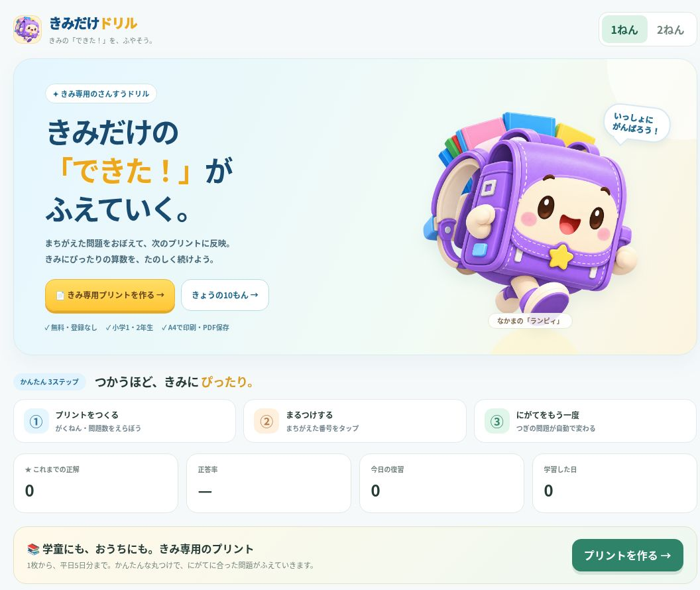
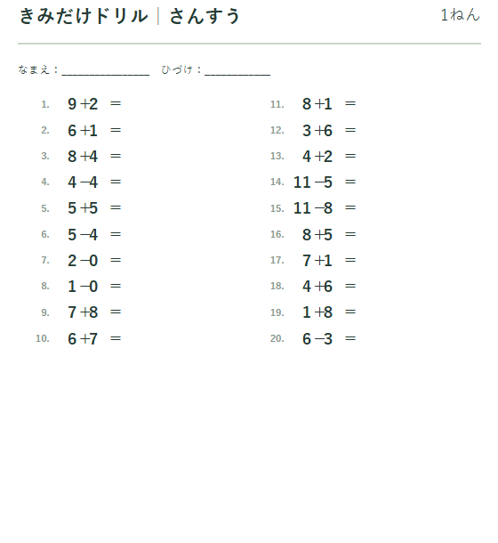
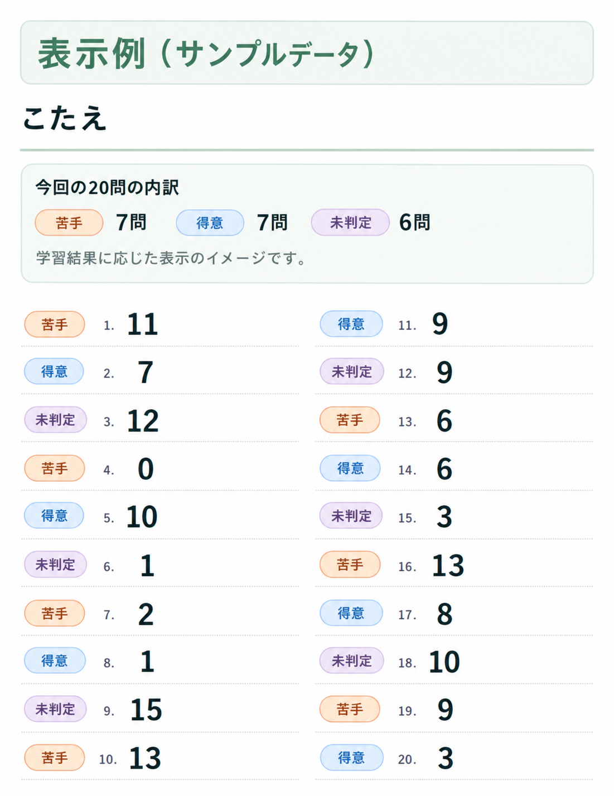

前回の記事では、
「おうち学習メーカー」
というWebアプリを作っている途中の話を書きました。
そのときは、
文字の大きさ。
問題番号と式の間隔。
「＝」の位置。
余白。
そんな細かい部分をAIに何度も直してもらいながら、
「人間の“なんか違う”をAIに伝えるのは意外と難しい」
という話をしました。
そこから、さらに修正を続けました。
そして。
名前も変わりました。
「おうち学習メーカー」改め、
「きみだけドリル」です。
今回は、ひとまず使い始められるところまで完成しました。
そもそものきっかけは、初めての夏休み
作ろうと思ったきっかけは、
小学1年生の子どもの初めての夏休みでした。
学童では、毎日少し勉強する時間があるらしい。
そこで悩みました。
「何を持たせればいいんだろう？」
最近はスマホやタブレットで学べる教材もたくさんあります。
でも、学童に毎日端末を持っていくのは難しい。
市販のドリルでもいい。
ただ、
せっかくAIを使っていろいろ作っているなら、
自分の子どもに合わせて問題が変わるプリントを作れないか。
それがスタートでした。

紙なのに、使うほど「その子専用」になる
やりたかったことは、
実はかなりシンプルです。
家で問題を作る。
A4で印刷する。
学童に持っていく。
帰ってきたら丸つけする。
そして、
間違えた問題を記録する。
すると次に作る問題には、
苦手な内容が少しずつ反映される。
つまり、
やればやるほど、その子専用のドリルになっていく。
普通のプリントなら、
20問解いたらそこで終わりです。
でも「きみだけドリル」は、
その20問の結果が、
次の20問につながっていきます。

今回、
「おうち学習メーカー」から「きみだけドリル」に名前を変えたのも、
この特徴が大きくなってきたからです。
ただ問題を作るだけではなく、
使うほど“自分専用”になっていく。
そのほうが、
このアプリの中身に合っていると思いました。
作っている途中で、考えが変わったところもある
制作中は、
自分だけで考えず、
周りの人にも話を聞きました。
その中で、
「親としては、どこが苦手なのか分かったほうが便利だよね」
という話になりました。
そこで最初は、
子どもが解くプリントにも、
「苦手」
と分かるような表示を入れていました。
でも途中で、
ふと気になりました。
「これ、子ども本人が見たらどう思うんだろう？」
まだ小学1年生です。
プリントを見るたびに、
「苦手」
と書かれていたら、
本当に苦手になる前から、
「自分はこれが苦手なんだ」
と思ってしまうかもしれない。
そこで、
この表示は削りました。
子どもが見るプリントは、
あくまで普通の問題。
一方で、
保護者側では、
どこで間違いが多いのか、
どこが得意なのか、
確認できるようにしました。

これは、
作り始めたときには考えていなかった部分です。
AIに機能を追加してもらうだけではなく、
子どもがどう感じるかを考えて、あえて機能を削る。
そこも大事だと感じました。
前回書いた「なんか違う」との戦いも続いた
もちろん、
前回の記事で書いた、
見た目の調整もかなり続きました。
文字を少し大きくする。
すると間隔が崩れる。
「＝」の位置を直す。
すると問題番号がズレる。
左右の列をそろえる。
今度は別の場所が気になる。
AIに、
「ここを直して」
とお願いしても、
自分がイメージしている
「ちょうどいい感じ」
を一回で再現してくれるとは限りません。
機能だけなら、
比較的早く作ってくれる。
でも、
実際に子どもが使うものとして、
見やすく、
迷わず、
気持ちよく使えるようにする。
ここは、
かなり何往復もしました。
だから今回の完成は、
「AIに一言お願いしたらできました」
という感じではありません。
むしろ、
AIと一緒に何度も作り直して、ようやくここまで来た
という感覚です。
「完成」ではなく、「使い始められるところまで」
今回、
「きみだけドリル」は、
ひとまず使える形になりました。
問題を作る。
印刷する。
学童に持っていく。
丸つけする。
結果を記録する。
また次の問題を作る。
それを繰り返すほど、
少しずつその子専用になっていく。
まだ改善したいところはあります。
実際に子どもが使い始めたら、
今まで気づかなかった問題も出てくると思います。
なので、
完全完成というより、ようやく本番テストが始められる状態になった
という方が近いです。
でも、
少し前までの「おうち学習メーカー」と比べると、
名前も、
考え方も、
かなり変わりました。
最初は、
「夏休みの学童に何を持たせよう？」
という小さな悩みでした。
それが今は、
使うほどその子専用になっていくドリル
という形になりました。
AIを使うと、
最初に考えていたものを作るだけではなく、
作りながら、
「本当に欲しかったものは、こっちだった」
と気づくことがあります。
今回の「きみだけドリル」は、
まさにそれでした。
次は、
実際に子どもが使ってみて、
本当に苦手が減っていくのか。
本当に使い続けてくれるのか。
そこを見ていこうと思います。